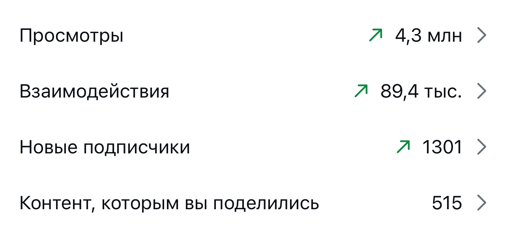
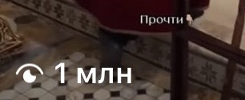

Загрузи скриншот любого сайта - и через несколько секунд получи готовый рабочий код
Screenshot to Code - открытый бесплатный инструмент: считывает раскладку, шрифты и цвета со скриншота и сам пишет из них код, а какую нейросеть для этого использовать - решать тебе
Что это и зачем
Сверстать сайт с нуля - долго, а агентство за один такой макет берёт от нескольких тысяч долларов. Screenshot to Code превращает уже готовую картинку сайта в рабочий код за секунды
Работает это так: ты загружаешь скриншот сайта, инструмент считывает раскладку, отступы, шрифты и цвета - и сам пишет из них код. Рядом сразу открывается живой превью - картинка того, как страница выглядит в браузере прямо сейчас, и результат можно дорабатывать в том же окне обычными словами, без единой строчки кода руками
Под капотом это не одна нейросеть, а сразу несколько топовых на выбор - какую из них использовать для конкретного скриншота, решать тебе
Цифры сверены напрямую в GitHub 18.09.2026. Проект живой и активно обновляется, число звёзд у тебя на экране может быть больше
Дальше - шаги от первого скриншота до готового кода, который можно вставить в свой проект
Шаг 0. Что нужно до старта
Только браузер и скриншот сайта, дизайн которого хочешь повторить. Ничего заранее ставить не нужно - весь путь ниже идёт через сайт проекта в браузере
Что это даёт: можно начать прямо сейчас, с любого компьютера
Открой сайт проекта и загрузи скриншот
Куда нажать. Открой в браузере страницу screenshottocode.com и найди на ней окно загрузки картинки. Сделай скриншот сайта, который хочешь повторить - свой черновик, чужой сайт для референса, макет из дизайн-программы - и перетащи файл в это окно
Что увидишь. Инструмент принимает картинку и начинает разбирать её на части: где заголовок, где кнопки, какие отступы между блоками
Что это даёт. Регистрация для первой попытки не нужна - можно сразу проверить, как инструмент справится именно с твоим макетом
Выбери нейросеть и получи готовый код
Куда нажать. Рядом с окном загрузки будет список нейросетей, на которых может работать разбор картинки - выбери любую, разница проявится только в деталях результата
Что увидишь. Через несколько секунд с одной стороны экрана появляется готовый код страницы, а с другой - её живой превью
Что это даёт. Вместо часов вёрстки вручную - рабочий каркас страницы, который можно донастроить, а не собирать заново с нуля
Доработай результат и сохрани код
Куда нажать. Прямо под превью есть строка, куда можно написать доработку обычными словами - «сделай кнопку крупнее», «поменяй цвет фона на бордовый» - и отправить. Готовый результат скачивается кнопкой рядом с кодом
Что увидишь. Страница перерисовывается под твою правку прямо в этом же окне, без нового скриншота и без повторной загрузки
Что это даёт. Код, который уже не выглядит как черновик и который можно вставить в свой проект
Поставь инструмент себе на компьютер (по желанию)
Куда нажать. Бесплатная проба на сайте даёт ограниченное число попыток в месяц. Если хочешь работать без этого ограничения и на своём ключе нейросети (личном коде доступа, который тебе выдаёт сама нейросеть), скачай проект со страницы GitHub, впиши свой ключ в файл настроек с именем .env - это простой текстовый файл рядом с проектом - и вставь в терминал (программу, где команды печатаются текстом, а не нажимаются мышкой) две строки:
Что увидишь. Программа Docker (она запускает уже готовый чужой сервис прямо на твоём компьютере одним пакетом) поднимает инструмент у тебя, и через минуту он открывается в твоём браузере - это уже твоя собственная копия, а не чужой сайт
Что это даёт. Работаешь на своём ключе нейросети без месячного лимита сайта, и ничего не уходит за пределы твоего компьютера
Если что-то не подключилось
Три вещи, которые проверить по порядку:
- Сайт пишет, что бесплатные попытки на этот месяц закончились - подожди начала следующего месяца или перейди к Шагу 4: там ограничения сайта не действуют
- Скриншот не загружается - проверь, что это обычная картинка в формате JPG или PNG, а не PDF и не ссылка на страницу
- Команда с Docker (программой, которая одной строкой разворачивает готовый чужой сервис у тебя на компьютере) выдаёт ошибку - значит она ещё не поставлена: скачай её с сайта
docker.com, там же кнопка для твоей системы
Где смотреть подробности
Основной источник - сама страница проекта на GitHub:
github.com/abi/screenshot-to-code- код, документация, вся история проектаscreenshottocode.com- сам инструмент, готовый к работе без установки
Инструмент сейчас бесплатный
Открытый код проекта - лицензия MIT, его можно поставить себе на компьютер и пользоваться без ограничений, платишь только за свой ключ нейросети по факту использования. Готовый сайт screenshottocode.com для быстрой пробы тоже не просит банковскую карту, но даёт ограниченное число попыток в месяц - для первого теста этого хватает с запасом
Что происходит с блогом, пока я собираю такие инструкции
Пишу про такие находки регулярно, и вот что это даёт блогу на нейросетях за то же время





Три рилса по миллиону и больше. Без рекламы и без команды: производство занимает минуты, время уходит на смысл
Готовый код - это только начало
Я одна, в декрете, без команды разработки собираю сайты и системы на нейросетях сама. Один такой инструмент экономит время на вёрстке одной страницы, но собрать из готового кода, дизайна и своих цепочек рабочий сайт под конкретный продукт - это уже не один скриншот
Screenshot to Code закрывает вопрос быстрого черновика кода по картинке. Если нужен целый сайт с воронкой, автоматизация или продукт на нейросетях - одного инструмента мало, нужна архитектура под твою конкретную задачу
На консультации разбираю, как выстроить такую систему у тебя
Напиши слово
мне в личку Telegram
НаписатьМои каналы и страницы